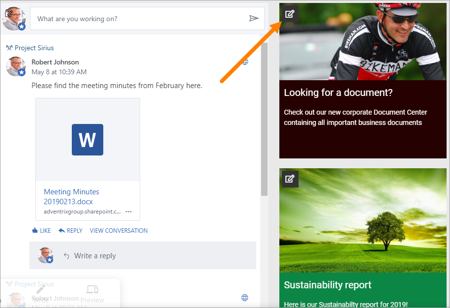
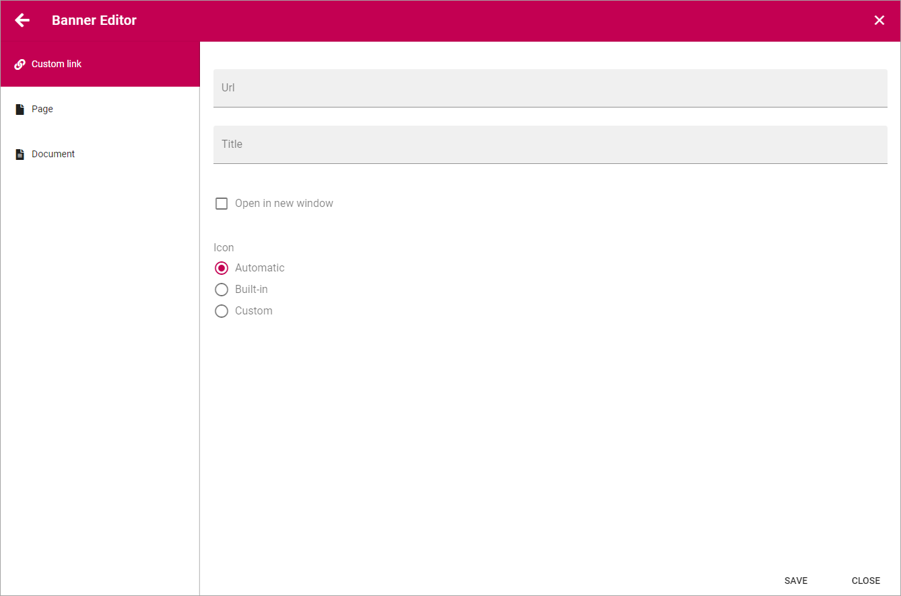
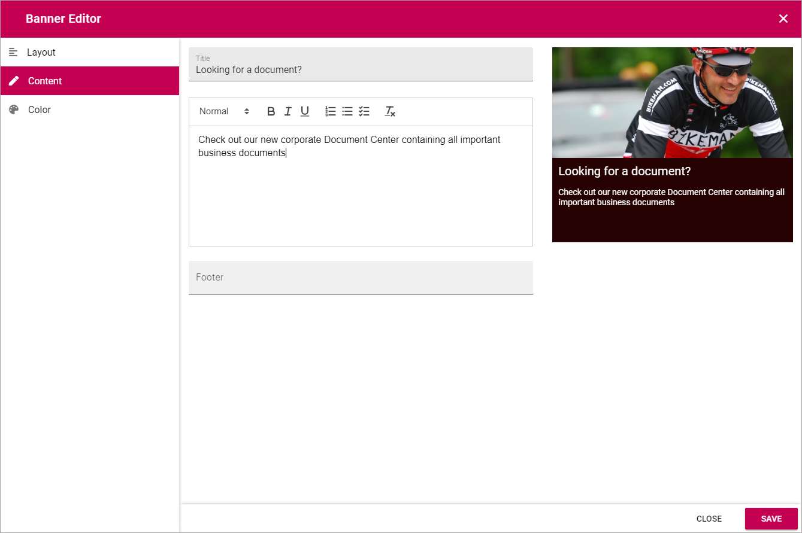

Banner¶
Using the Banner block an editor can add banners on a web page.

You use the Banner Editor to edit the banner. You do it the same way for existing and newly added banners.
The Banner Editor¶
To edit a banner, edit the page in Design mode and click this icon:
The Banner Editor starts and the contents of the banner, if any, is loaded. As you edit the banner you can see a preview to the right.

The Layout tab¶
Here you can edit the following:
- Layout: Defines the Layout of the banner - “Image On Top”; Displays a big image at the top, above title, content and footer, best suitable for landscape images - “Title and Content on image”; The image covers the whole banner area, title and content are placed as an overlay; “Title on image”; In this case only the title is placed as an overlay.
- Padding: You can set some padding for the text in the banner here.
- Image: Use this field to add an image or a video, see below.
- Link: Add the link to open, if any, when the user clicks the banner. When you click the icon to the right, the Link options are displayed, see below.
- New Window: Defines whether the link should be opened in a new window or not.
Adding an image or a video¶
To add an image or a video to the banner you use the “Image” field.
Click the icon at the right of the field to use the Media Picker. See this page for more information: The Media Picker
Adding a link¶
You can add a Custom Link, that is, a url to any web page, a link to a Page in the tenant, or to a Document.
The Content tab¶
Here you can add a title, a text and a footer, if needed. For the text some basic formatting is available.
The Color tab¶
Here you can set the color for title, content, footer and background.

Don’t forget to save the changes when you’re done.